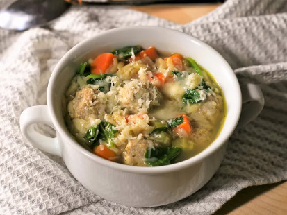

Instant Pot Italian Wedding Soup

Description
This Instant Pot Italian wedding soup made with meatballs, pasta, and cheese is a marriage made in heaven. There are many versions of this recipe; this is mine, and I hope you enjoy it.
Ingredients
- 1 tablespoon olive oil
- 1 ½ cups chopped carrots
- 1 cup sliced celery
- ½ cup diced red onion
- 1 teaspoon dried parsley
- ¼ teaspoon dried basil
- ¼ teaspoon ground black pepper
- 6 cups no-salt-added chicken broth
- 20 Italian meatballs, preferably home made
- ½ cup pastina pasta
- 6 ounces baby spinach
- salt to taste
- 4 teaspoons grated Parmesan cheese
Steps
- Turn on a multi-functional pressure cooker (such as Instant Pot) and select Sauté function. Pour in olive oil and heat until hot. Cook and stir carrots, celery, and onion in hot oil until tender, 4 to 5 minutes. Season with parsley, basil, and pepper. Pour in chicken broth and add meatballs. Close and lock the lid. Close the valve and select the Soup function according to manufacturer's instructions; set the timer for 3 minutes. Allow 10 to 15 minutes for pressure to build.
- Release pressure carefully using the quick-release method according to manufacturer's instructions, about 5 minutes. Unlock and remove the lid. Stir in pasta. Replace the lid. Close the valve and select the Soup function according to manufacturer's instructions; set the timer for 3 minutes. Allow 10 to 15 minutes for pressure to build.
- Release pressure carefully using the quick-release method according to manufacturer's instructions, about 5 minutes. Unlock and remove the lid. Stir in spinach. Let soup sit until spinach is wilted and pasta is fully cooked, about 5 minutes. Season with salt.
- Ladle into bowls and top with Parmesan cheese.
Go back to main page